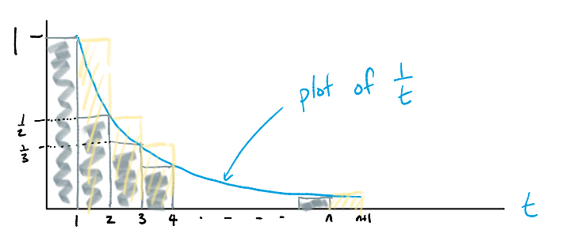

Notes based on Lectures 1-5 of youtube series and chapters of 1-5 of Asymptotia by Spencer.
Why: Sometimes we encounter really ugly looking functions like \(f(n) = 7n^{5/2} + 18n^2\ln^3n\) and this is hard to analyse. However, if we only care about the function for very large values of n, then we can ignore certain terms and focus on the important ones. Then we simpify the important bits into standard forms we can understand. This writeup is about the formal language of simplifying functions to be able to compare them for really large values of their input. As an example, in this world functions like \(f(n)= n^2\) and \(g(n)= n^2 + n\) are roughly the same and can be treated as such.
Another why: I have a research problem trying to connect sampling and privacy to sum privacy which might need a lot of these tools. In particular my probability mass function has a lot of binomial coefficients. I am hoping at the time of writing I will both learn the material and be able to use it in a novel way.
Before we analyse how a function behaves for very large values, we want to write them down in simple or standard form. A function \(f(n)\) is in standard form if it is the product of:
Example, Stirlings formula given by \(n^n e^{-n}\sqrt{2\pi n}\), is a complex looking thing in standard form.
We write \(f(n) \sim g(n)\) and say \(f(n)\) is asymptotic to \(g(n)\) when
\[\begin{align} \lim_{n \rightarrow \infty}\frac{f(n)}{g(n)} &= 1 \tag{1}\label{eq:equivalence} \end{align}\]We write \(f(n) = O(g(n))\) and say \(f(n)\) is big oh of \(g(n)\) when there is a positive constant \(C\) such that for all sufficiently large \(n\) i.e. \(n > n_0\) for some \(n_0 \in \mathbb{N}\)
\[\begin{align} f(n) &\leq Cg(n) \tag{2.a}\label{eq:bigOh1} \end{align}\]or equivalently
\[\begin{align} \lim_{n \rightarrow \infty}\frac{f(n)}{g(n)} &< \infty \tag{2.b}\label{eq:bigOh2} \end{align}\]We write \(f(n) = \Omega(g(n))\) and say \(f(n)\) is omega of \(g(n)\) when there is a positive constant \(\epsilon\) such that for all sufficiently large \(n\)
\[\begin{align} f(n) &\geq \epsilon g(n)\tag{3a}\label{eq:bigOmega1} \end{align}\]or equivalently
\[\begin{align} \lim_{n \rightarrow \infty}\frac{f(n)}{g(n)} &> 0 \tag{3b}\label{eq:bigOmega2} \end{align}\]We write \(f(n) = \theta(g(n))\) and say \(f(n)\) is theta of \(g(n)\) when there exist positive constants \(C, ε\) so that for n sufficiently large
\[\begin{align} \epsilon g(n) &\leq f(n) \leq C g(n) \tag{4a}\label{eq:theta1} \end{align}\]or equivalently
\[\begin{align} \Omega\Big(g(n)\Big) &= f(n) = O\Big(g(n)\Big) \tag{4b}\label{eq:theta2} \end{align}\]We write \(f(n) = o(g(n))\) and say \(f(n)\) is little oh of \(g(n)\) if
\[\begin{align} \lim_{n \rightarrow \infty}\frac{f(n)}{g(n)} &= 0\tag{5}\label{eq:smallO} \end{align}\]Sometimes we write \(f(n) \ll g(n)\)
We write \(f(n) = \omega(g(n))\) and say \(f(n)\) is little omega of \(g(n)\) if
\[\begin{align} \lim_{n \rightarrow \infty}\frac{f(n)}{g(n)} &= \infty\tag{6}\label{eq:smallOmega} \end{align}\]Sometimes we write \(f(n) \gg g(n)\)
A function f(n) is said to be polynomial \(g(n)\) if
\[\begin{align} f(n) &= g(n)^{O(1)} \tag{7}\label{poly} \end{align}\]\(O(1)\) is an anonymous function upper bounded by some constant \(C\).
A function \(f(n)\) is said to be polylog if \(f(n) = Θ\) for some positive constant \(c\)
\[\begin{align} f(n) &= \theta(\ln^c n) \tag{8}\label{polylog} \end{align}\]We say \(f(n) = \widetilde{O}(g(n))\) when
\[\begin{align} f(n) &= g(n)\text{poly}(\ln g(n)) \tag{9}\label{lazyO} \end{align}\]as \(n \rightarrow \infty\)
For small values \(\epsilon \rightarrow 0\), we say \(f(\epsilon) = \widetilde{\Omega}\big(g(\epsilon)\big)\) when
\[\begin{align} f(\epsilon) &= \frac{g(\epsilon)}{\text{poly}(\ln g(\epsilon))} \tag{10}\label{lazyOmega} \end{align}\]Ideally for our really ugly function \(f(n)\) we want a \(g(n)\) such that they are equivalent. This is sometimes hard, so instead we upper bound and lower bound with standard form functions. If the same \(g(n)\) is an upper bound and a lower bound then we say we have found a tight bound i.e. \(f(n) = \theta\big(g(n)\big)\). Saying \(f(n) = \theta\big(g(n)\big)\) means that \(g\) and \(f\) are within some unknown constant factor of each other. When \(f\) and \(g\) are equivalent, we have identified the constant but we can ignore lower order terms.
Example:
\[\begin{align} \sum_{i=1}^n i &= \frac{n(n + 1)}{2} \\ &= \frac{n^2(1 + \frac{1}{n})}{2} \\ &= \frac{n^2(1 + o(1))}{2} \\ &\sim \frac{n^2}{2} \end{align}\]Alternatively, we can say that when \(f(n) \sim g(n)\), then \(f(n) = g(n)\Big(1 + o(1)\Big)\). Examples of functions that are o(1) are \(\frac{1}{n}, \frac{1}{n^2}\), or any function that tends to \(0\) as \(n\) tends to infinity.
Consider the sum of \(n\) harmonic numbers \(H(n)\) (shows up in the Coupon Collector problem)
\[\begin{align} H(n) &= \sum_{i=1}^n \frac{1}{i} \\ &= 1 + \frac{1}{2} + \frac{1}{3} \dots + \frac{1}{n} \end{align}\]Task: We need to find an upper bound and lower bound for this function in standard form.
\[\begin{align} H(n) &= \sum_{i=1}^n \frac{1}{i} \\ &= 1 + \frac{1}{2} + \frac{1}{3} \dots + \frac{1}{n} \\ &\leq 1 + \frac{1}{2} + \frac{1}{2} + \frac{1}{4} + \frac{1}{4} \dots + \frac{1}{8} \dots \\ &= 1 + \left\lfloor \ln n \right\rfloor \\ &= O(\ln n) \\ \end{align}\]Similarly
\[\begin{align} H(n) &= \sum_{i=1}^n \frac{1}{i} \\ &= 1 + \frac{1}{2} + \frac{1}{3} + \frac{1}{4}\dots + \frac{1}{n} \\ &\geq 1 + \frac{1}{2} + \frac{1}{4} + \frac{1}{4} + \frac{1}{8} \dots \\ &= 1 + \frac{1}{2}\left\lceil \ln n \right\rceil \\ &= \Omega(\ln n) \\ \end{align}\]Therefore, \(H(n) = \Theta(\ln n)\).
Task: We have approximated it up to a constant factor. But we wish to identify the constant factors. (We rarely need to do this)
Want to show \(H(n) \sim \ln n\) and to do this we use the Integral trick
See picture below (which I borrowed from the course notes)

\[\begin{align} H(n) &= \text{ Area of grey rects} \\ &\leq 1 + \int_{1}^{n} \frac{1}{t}dt \\ &= 1 + \ln n \end{align}\] \[\begin{align} H(n) &= \text{ Area of yellow rects} \\ &\geq \int_{1}^{n+1} \frac{1}{t}dt \\ &= \ln(n+1) \end{align}\]This should be enough to show that \(H(n) \sim \ln n\) but to be fully formal we derive this explicitly. To do so we need the Taylors series.
A good taylors series recap can be found here
TODO from Asymptotia: Some theorems about Taylors series
This approximation shows up in papers all the time.
For small \(x\),
\[e^x = 1 + x\]
Other important approximations that come from Taylors series approximations of function values \(f(n)\) when \(n\) is close to 0:
\(\frac{1}{1 - \epsilon} = 1 + \epsilon + O(\epsilon^2)\)
\(\sqrt{1 + \epsilon} = 1 + \frac{1}{2}\epsilon + O(\epsilon^2)\)
Asymptotics of \(\sqrt{n-1} - \sqrt{n}\): How does this function grow?
Asymptotics of \(\log_2(\frac{1}{1/2 - \epsilon})\): How does this function grow?
From above analysis both \(1 +\ln n\) and \(\ln (n+1)\) are equivalent to \(\ln n\) but which one grows more similart to it?
Consider a relation such as \(y = x \ln x\) for \(x \geq 1\). This is an increasing function of \(x\) and so there is a unique inverse function \(x = f(y)\) for \(y \geq 0\). However, there is no compact way to write \(f(y)\) precisely. However, if we were to consider only the asymptotic behaviour of these functions – this problem disappears.
For very large \(x\) and \(y\),
\[\begin{align} \ln y &= \ln(x) + \ln \ln(x) \end{align}\]As \(\ln \ln(x)\) is grows really slowly, we can say
\[\begin{align} x &= \frac{y}{\ln(x)} &\sim \frac{y}{\ln(y)} \end{align}\]Using this intuition, from Asymptotia by Spencer we state the following theorem:
If \(y=\Theta(x^a\ln^b x)\), then \(x=\Theta(y^{\frac{1}{a}} \ln^{\frac{-b}{a}}y)\)
This is a concrete example of how using asympotics helps us understand complicated functions and it will lead us to more tricks to bound factorials and binomial coefficients which show up in all kinds of counting problems.
FACT: If we have 23 people in a room, there is a 50% chance that 2 people with the same birthday.
In general, if we have \(m\) bins and \(n\) balls. We play a game by tossing the balls into the bins one after the other without replacement. We are interested in knowing for a fixed \(m\) how does the probability of a collision grow with \(n\). Define \(p_{m,n}:=\) as the probablity of seeing no collisions.
\[\begin{align} p_{m,n} &= 1(1-\frac{1}{m})(1-\frac{2}{m})\dots(1-\frac{n-11}{m}) \\ &\leq e^{-1/m}e^{-2/m}\dots e^{-n+1/m} \tag{a}\label{tBound} \\ &= exp\{-\frac{n(n-1)}{2m}\}\\ &= exp\{-\frac{n^2}{m}\}exp\{\frac{n}{m}\}\\ &\leq exp\{-\frac{n^2}{m}\}\Big( 1 + O(\frac{n}{m})\Big)\tag{b}\label{tBound2} \end{align}\]\(\ref{tBound}: 1 - x \leq e^{-x}\) \(\forall x \geq 0\) using Taylors series for \(\ln( 1-x)\)
\(\ref{tBound2}: 1 + x \leq e^{x}\) \(\forall x \geq 0\)
\(1 + x \geq exp\{x + Cx^2\}\)
Using the above fact we have
\[\begin{align} p_{m,n} &= 1(1-\frac{1}{m})(1-\frac{2}{m})\dots(1-\frac{n-11}{m}) \\ &\geq exp\{-\frac{1}{m} - C\frac{1}{m^2}\}exp\{-\frac{2^2}{m} - C\frac{2}{m^2}\}\dots exp\{-\frac{n-1}{m} - C\frac{(n-1)^2}{m^2}\} \\ &= exp\{-\frac{n(n-1)}{2m}\}exp\{-C\frac{O(n^3)}{m^2}\} \tag{a}\label{sSquares}\\ &= exp\{-\frac{n(n-1)}{2m}\}\Big( 1 - O(\frac{n^3}{m^2})\Big) \tag{b}\label{tBound3}\\ &\geq exp\{-\frac{n^2}{m}\}\Big( 1 + O(\frac{n}{m})\Big)\Big( 1 - O(\frac{n^3}{m^2})\Big) \end{align}\]Note: This lower bound is trivial if \(n^3\) is greater than \(m^2\), making it a negative number. All probabilities are greater than negative numbers. So assume \(n^3 \leq m^3\)
\(\ref{sSquares}:\) Upper bounding sum of squares
\(\ref{tBound3}: 1 + x \leq e^{x}\) \(\forall x \geq 0\) and we are lower bounding so multiplying by a smaller number only decreases lower bound.
Finally we have that
\[\begin{align} exp\{-\frac{n^2}{m}\}\Big( 1 + O(\frac{n}{m})\Big)\Big( 1 - O(\frac{n^3}{m^2})\Big) &\leq p_{m.n}\\ &\leq exp\{-\frac{n^2}{m}\}\Big( 1 + O(\frac{n}{m})\Big) \end{align}\]which means we can write the above results as
\[\begin{align} p_{m.n} &= exp\{-\frac{n^2}{m}\}\Big( 1 + O(\frac{n}{m})\Big)\Big( 1 - O(\frac{n^3}{m^2})\Big) \end{align}\]We have two error terms : \(\Big( 1 + O(\frac{n}{m})\Big)\) and \(\Big( 1 - O(\frac{n^3}{m^2})\Big)\). Both of them approach constants, so we can set $p_{m.n} exp{-} giving us
\[\begin{align} p_{m.n} &\approx exp\{-\frac{n^2}{m}\}\\ n &= \sqrt{m\ln (1/p_{m,m})} \end{align}\]Also note, magically at \(n=\sqrt{m}\), we have \(\frac{n^3}{m} = \frac{n}{m}\) so both error terms contribute equally.
A little numerical experiment to verify how tight this is bound is
At the end of this section, we will see how these tricks are directly used in a paper published in ICML 2020, on shuffle privacy.